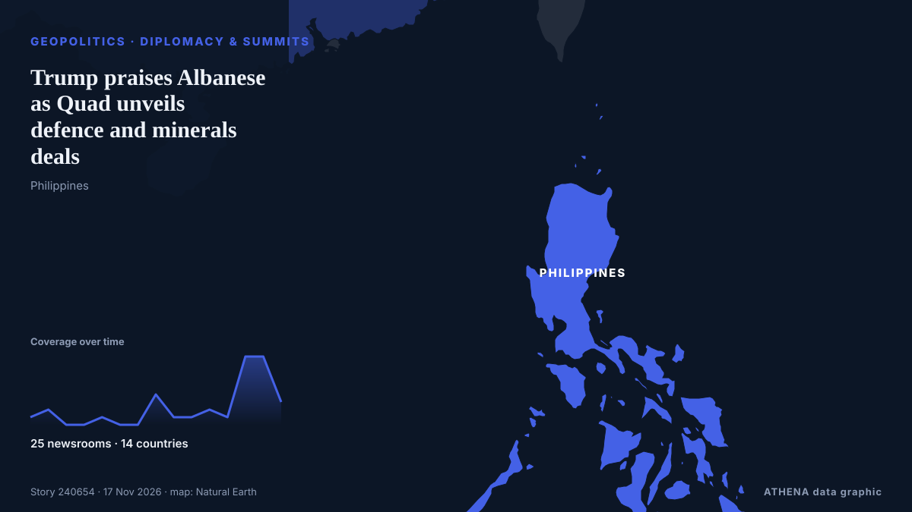

Diplomatie et sommets
SponsoriséPrésenté par  Cybernetics and Artificial Intelligence Lab Welcome to the Cybernetics and Artificial Intelligence Laboratory, established at the Department of Business Administration of the National and Kapodistrian University of Athens. The lab is headed by Professor Dimitrios Thomakos. The lab aims to do research that can be published in top venues. Our research uses tools and methods of Artificial Intelligence, and lies in the following areas: - Forecasting - Decision making - Cyber security - Finance We are always looking forward to collaborating with exceptional students!
Cybernetics and Artificial Intelligence Lab Welcome to the Cybernetics and Artificial Intelligence Laboratory, established at the Department of Business Administration of the National and Kapodistrian University of Athens. The lab is headed by Professor Dimitrios Thomakos. The lab aims to do research that can be published in top venues. Our research uses tools and methods of Artificial Intelligence, and lies in the following areas: - Forecasting - Decision making - Cyber security - Finance We are always looking forward to collaborating with exceptional students!
| 4 nov. | 0 |
|---|---|
| 5 nov. | 0 |
| 6 nov. | 0 |
| 7 nov. | 0 |
| 8 nov. | 1 |
| 9 nov. | 0 |
| 10 nov. | 0 |
| 11 nov. | 0 |
| 12 nov. | 1 |
| 13 nov. | 3 |
| 14 nov. | 9 |
| 15 nov. | 4 |
| 16 nov. | 6 |
| 17 nov. | 0 |
Les titres sont affichés en anglais, tels que publiés.

Trump praises Albanese as Quad unveils defence and minerals deals
With major talks in China approaching, US President Donald Trump, Anthony Albanese and their fellow Quad leaders deepen cooperation on defence and technology at a summit in Manila. de ABC News Australia
‘Orange Order could grow in a united Ireland’: Varadkar
Opposition parties had piled on pressure for the Government to make preparations for a debate on a united Ireland. de The Irish News (Belfast)
Trade war in focus at ASEAN summit ahead of Trump’s arrival
The late arrival of US President Donald J. de BusinessWorld
Liberman's party rules out Netanyahu unity government as Eisenkot faces growing coalition pressure
Yisrael Beytenu MK Yulia Malinovsky ruled out joining a Netanyahu-led unity government as Eisenkot struggles to secure a majority amid negotiations with Likud and haredi parties. de The Jerusalem Post
Chinese premier lauds 'extraordinary' ties with ASEAN ahead of Trump visit
In opening remarks to regional leaders during the Association of Southeast Asian Nations summit in Manila, Li said that at a time of growing unilateralism and protectionism and recurring geopolitical… de The Business Standard (Bangladesh) (working feed)
Kremlin aide denies Russia agreed to include Europe in Ukraine peace talks
"A great deal would have to be done before that could be agreed," Kremlin aide Yury Ushakov said. de The Moscow Times
Xi, Trump and Putin to hold first trilateral summit in China
Leaders expected to discuss nuclear disarmament, while Ukraine may remain off the agenda. de News of Bahrain
EU forces board suspected Russian shadow fleet tanker in Mediterranean
EU foreign policy chief Kaja Kallas says vessel was sailing under false flag as EU prepares fresh Russia sanctions. de Anadolu Agency (English)
Four foreign ministers urge Israel to allow ’rapid and unimpeded’ aid into Gaza
The foreign ministers of Australia, Canada, Italy and Britain have urged Israel to “stop the delays” and allow “immediate, rapid and unimpeded humanitarian access throughout Gaza”. de The National
Twelve APEC leaders to attend CEO Summit in Shenzhen
Twelve leaders from Asia-Pacific Economic Cooperation (APEC) member economies will attend the 2026 APEC CEO Summit in Shenzhen, a Chinese trade official said on Sunday. de CGTN (China)
Trump, Xi and Putin eye historic China summit: Why a new Yalta is being discussed
US-China-Russia summit plans remain unsettled, but leaders may meet at the APEC forum in Shenzhen. de Express Tribune
US floated idea swapping Ukrainian territory for NATO membership: Zelensky
Ukrainian President Volodymyr Zelensky said U.S. negotiators floated the possibility of Ukraine surrendering in the eastern Donbas region and conceding it to Russia in exchange for NATO membership. de The Hill
Zelensky says Russia’s energy attacks helped by Starshield restrictions
KYIV: Russia struck energy and railway infrastructure in eight regions of Ukraine overnight, President Volodymyr Zelensky said on Sunday, in attacks he said were made possible partly due to… de Arab News
ASEAN reaffirms engagement with Myanmar, seeks to advance peace plan
Philippine president Ferdinand Marcos Jr said Asean leaders agreed to maintain engagement with Myanmar while adhering to the bloc’s five-point peace plan. de Free Malaysia Today
Trump admin warns air travellers of another messy day
Trump admin warns air travelers of another messy day. de Gulf News
Pakistani Minister To Make Rare India Visit, First Visit Since Op Sindoor
It will be the first trip to India by a Pakistani federal minister since former foreign minister Bilawal Bhutto Zardari attended an SCO meeting in Goa in May 2023. de NDTV
Trump says may hold off on Iran attacks barring new provocations
Trump has told senior advisers in recent days that he may hold off on attacking Iran if the US faces no new provocations from Tehran or Yemen's Houthis. de The New Arab
Zelensky: Russia seeks to revise Europe’s security architecture
President Volodymyr Zelensky said that Russia is seeking to revise the security architecture, at least in Europe, and that this is dangerous. de Ukrinform (English)
49th ASEAN Summit kicks off in Philippines
President Ferdinand Marcos Jr. on Thursday appealed for public understanding over disruptions caused by preparations for the 49th ASEAN Summit and Related… de Daily Tribune